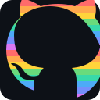
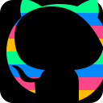

Striped Octocat — GitHub octocat silhouette with horizontal colored stripes conveying a table/data view
Bold silhouette with wide stripes separated by dark gaps. GitHub-themed colors (green, blue, orange, purple, red).
Dense stripes with no gaps. Warm-to-cool rainbow cycle across the silhouette.

128pxTwo-tone GitHub blue and green stripes with dark separators. Clean and branded.
Light background with soft pastel row stripes (green, blue, yellow, pink) and a thin dark outline. Spreadsheet feel.
High-contrast neon stripes on pure black. Thick 16px bands for maximum readability at small sizes.

128pxMonochrome green stripes using GitHub's contribution graph palette (dark to bright green). Strongly branded.
Mostly solid gray octocat with a colorful stripe band across the middle. Balances recognizability with the table motif.
Three-color cycle (blue, green, purple) with dark separators. GitHub brand colors in a clean table-row pattern.